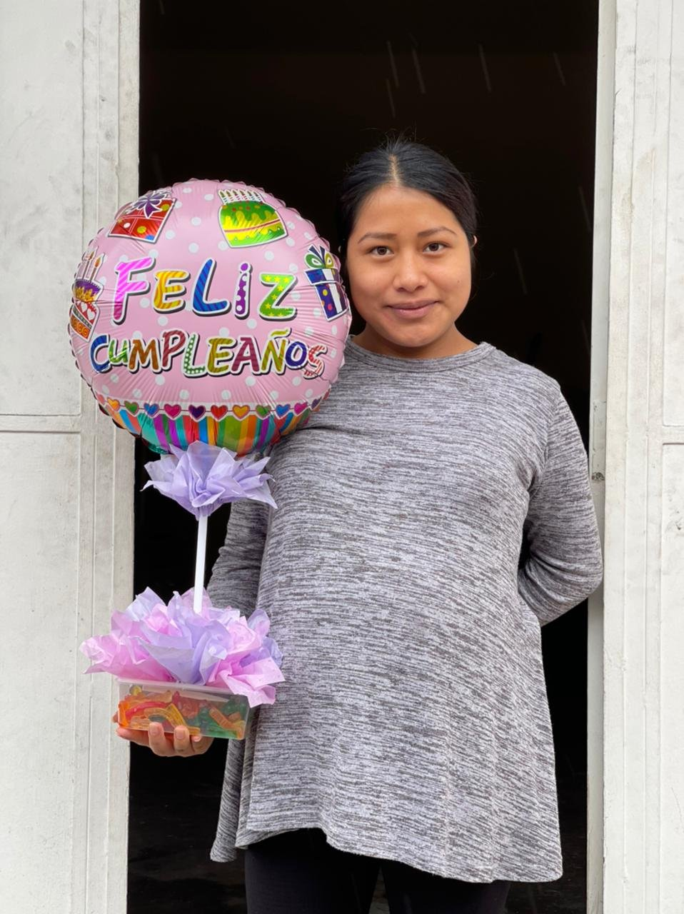
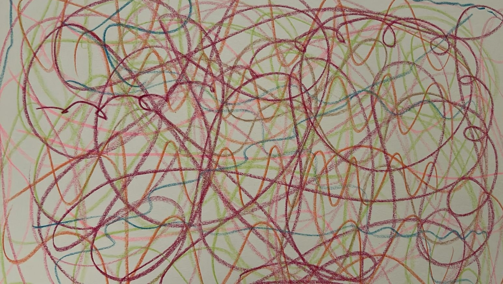
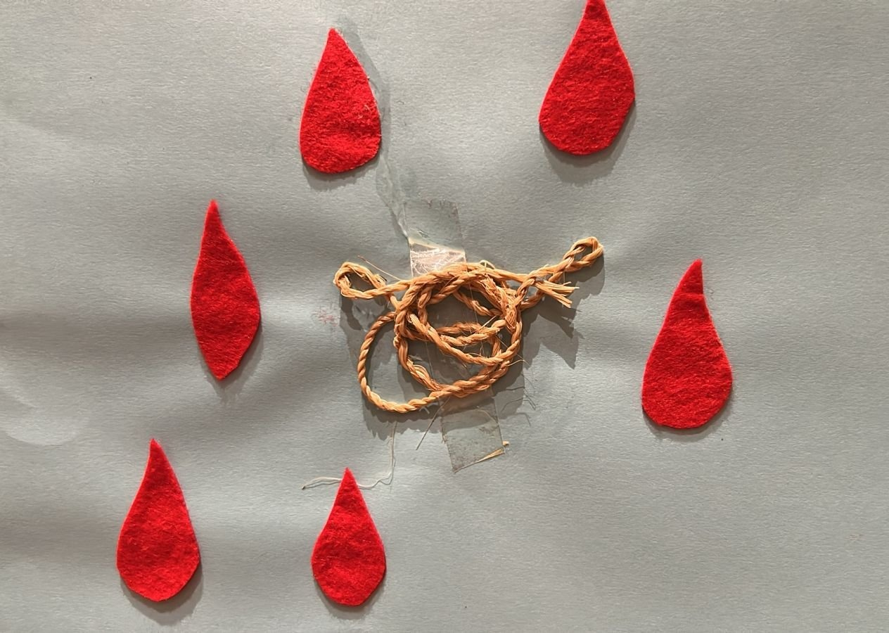
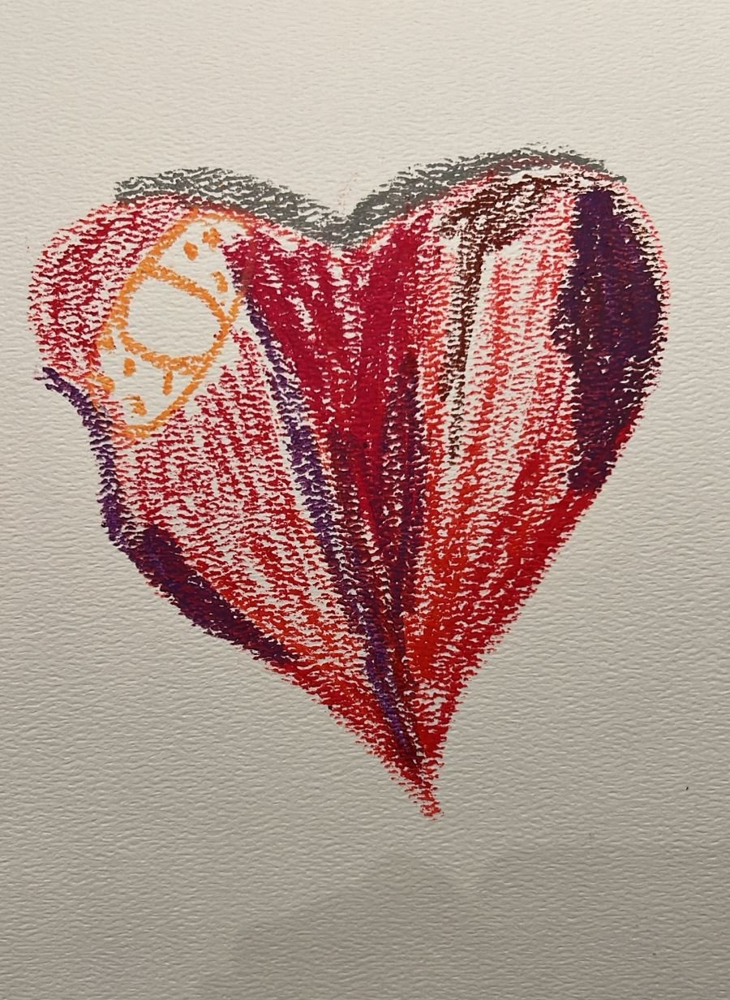
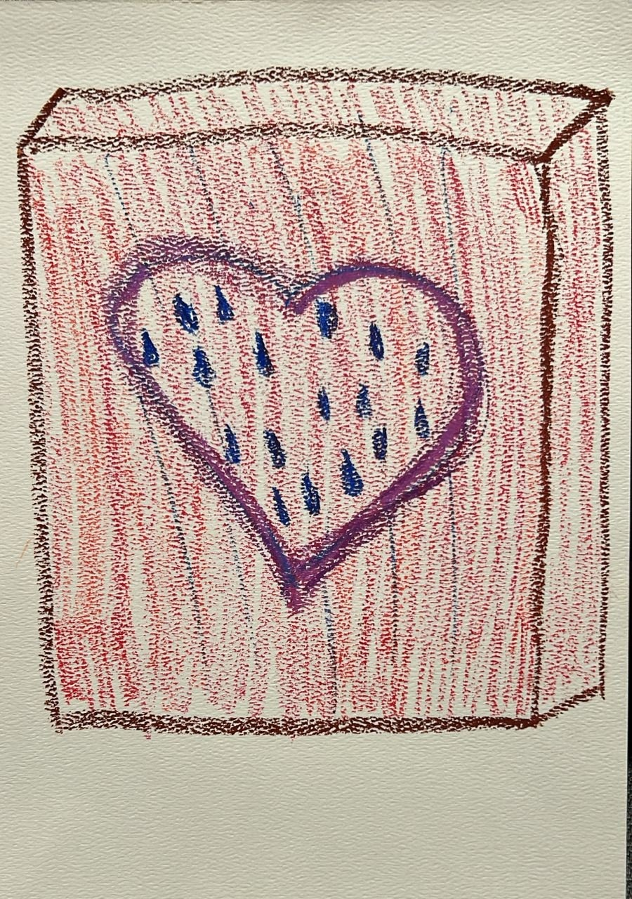
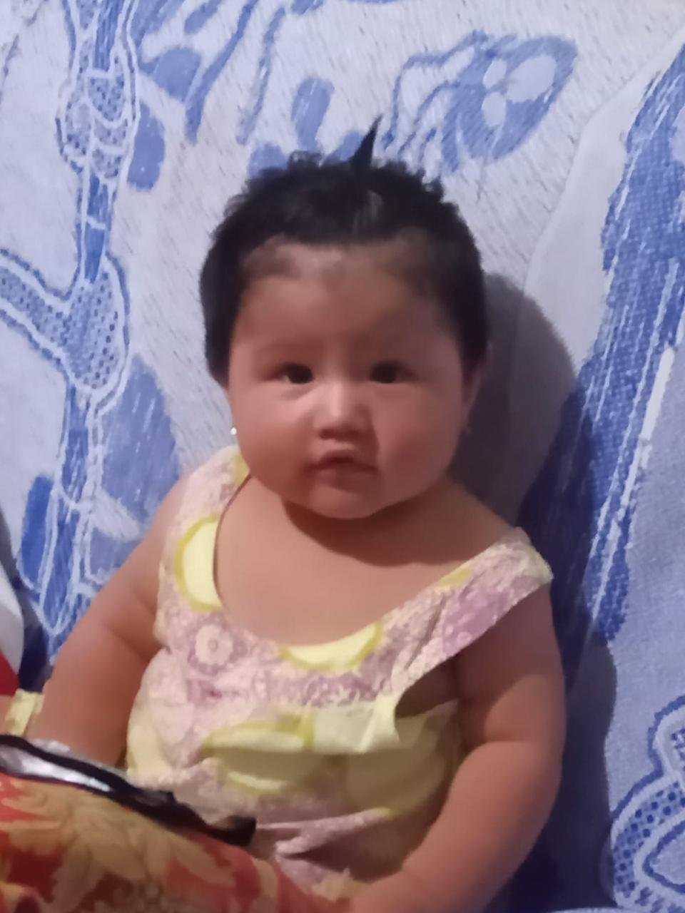
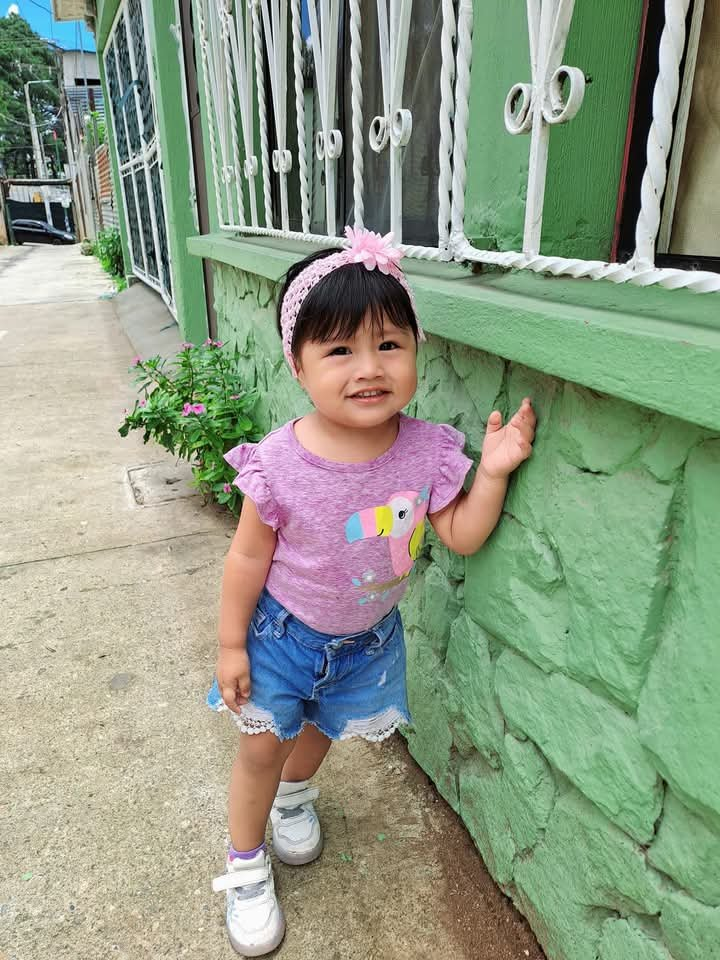

II Congreso Mundial de Personalismo · Madrid 2026
El arte que restituye a la persona. Un caso.
Carolina Heinemann · 4Meaning
El encuentro
19 años. Embarazada, sola, sin recursos. Para el sistema, un caso más.

La mirada
La miro por lo que es: una persona única, más que sus síntomas. La acompaño sin presionar, a su ritmo.
El puente
Sigo su trazo. Ella sigue el mío. Los crayones bailan juntos. Reímos.

El acto
El cuerpo que dibuja es «materia espiritualizada». Al crear, Paulina no solo hace un dibujo: se hace a sí misma. Burgos · Wojtyła (efecto intransitivo del acto)
El método
Mente, cuerpo y espíritu. Lo que se siente al escuchar lo que el cuerpo revela.
La sensación sentida
No nace de la mente, sino del diálogo entre lo que siente el cuerpo y el arte.

El cambio de sentido
La invito a encontrar una imagen que lo represente. Corazón apretado y adolorido.

«La obra de arte es un lugar de encuentro entre dos personas.» El sentido no se inventa: se descubre. Guardini

La persona restaurada
Se reconoce sin victimismo, dueña de su vida. La dignidad no depende de la miseria: es suya, la trae puesta.
El desenlace
Su principal motivación para salir adelante.

Su hija tiene dos años. Es feliz. Las dos están bien.

La tesis
Y le devuelve a la persona su unicidad, su dignidad y su sentido.
Carolina Heinemann · 4Meaning
II Congreso Mundial de Personalismo · Madrid 2026